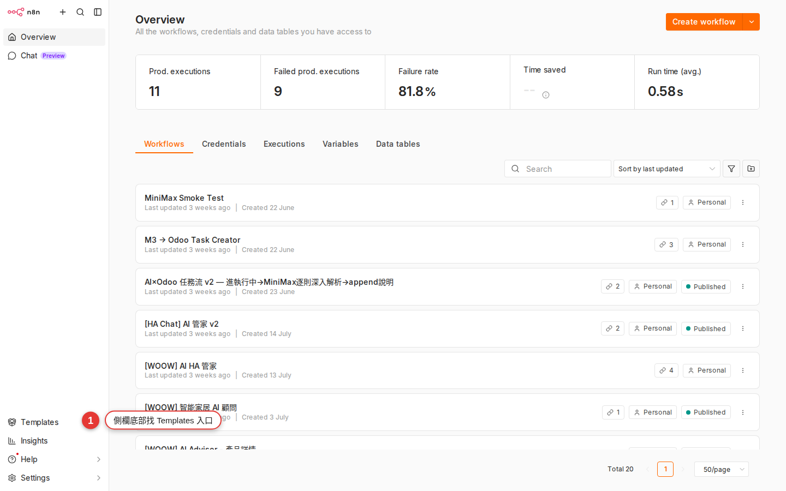

從 Templates gallery 起步
從零寫一個 workflow 很累。n8n 官方 + 社群做了幾千個現成的模板，「表單來了通知 Slack」「Airtable 資料同步 Google Sheet」「AI 幫你摘要 email」——直接抄改改就是你的。這章教你去哪找、怎麼挑、怎麼裝進 Woow n8n。
為什麼要先抄別人的
新手第一週最容易掉進的坑，是打開一個空白 canvas，然後盯著它想「⋯要拉哪個節點？」。半小時過去什麼都沒動。
真相是：你想做的事，別人 80% 機率已經做過了。而且做得比你第一次做的好。
- 想做「Google 表單填完自動通知 Slack」——有現成 template。
- 想做「Airtable 新增一列，寄封感謝信給對方」——有現成 template。
- 想做「每天早上 9:00 抓 RSS 摘要用 AI 生一段內容貼 Notion」——也有現成 template。
抄別人的 template 不是偷懶，是用最快的方式看懂 n8n 怎麼組節點。你會在 30 分鐘內看到一個能跑的 workflow，比你自己摸索兩週還有效。
Templates 其實就一池：n8n.io/workflows
先破一個常見誤解：n8n 本體沒有內建一個「離線」的模板 gallery。你以為的「兩個入口」，實際上通往同一個地方——公開的 n8n.io/workflows/。
| 你以為 | 實際上 |
|---|---|
| 側欄的 Templates 是 n8n 官方 curate、離線內建的池 | 按下去會把你帶去瀏覽器的 n8n.io/workflows/（除非公司有配置 custom templates library） |
| 兩邊模板不一樣，可以互補 | 是同一個公開池——內容一樣，只是入口不同 |
| 模板頁面有安裝次數 / 星星評分讓你排序 | 官方 gallery 目前沒有公開的安裝次數、星等或評分——只有分類、關鍵字、服務 icon |
n8n.io/workflows/。差別只在你要從側欄按鈕跳過去，還是直接在瀏覽器打開網址。抄過來的模板只是骨架，一定要換 credential、改欄位才會變成你的（ch6）。N8N_TEMPLATES_HOST 指向內部模板庫，那才會出現真正的「app 內瀏覽」體驗，內容也可能只有你們公司的模板。Woow n8n 目前用官方預設，所以按 Templates 就是連出去 n8n.io。
n8n.io/workflows/。怎麼挑一個好模板
模板池很大，你不會每個都適合。五個判斷點，10 秒內排除 80% 的地雷：
| 看什麼 | 好徵兆 | 壞徵兆 |
|---|---|---|
| 節點數量 | 3–8 個節點，一眼看得完 | 超過 15 個節點，光讀就頭暈——新手先跳過 |
| 作者 | 是 n8n 官方帳號或 Verified Creator（頭像旁有勾勾） | 沒名字的匿名帳號、又只上傳過 1 個——先觀望 |
| 更新日期 | 一年內（點進詳情頁看 Last update） | 兩年沒動——節點 API 可能已改，跑不起來 |
| 用了哪些節點 | 有你認得的服務（Slack、Google Sheets、Gmail） | 全是沒聽過的服務，credential 都不知去哪申請 |
| 描述 | 清楚寫「這是幹嘛的、需要什麼」 | 只有標題沒說明——作者自己都懶得寫 |
Steps 乙：直接開 n8n.io/workflows 貼 JSON
其實就是 Steps 甲，只是跳過「按側欄」那一步——直接在瀏覽器輸入網址。老手都走這條，省一次點擊。
-
瀏覽器打開
https://n8n.io/workflows/官方社群 gallery。左邊有分類（AI、Sales、IT Ops、Marketing、Document Ops、Support⋯⋯），也可以按服務 icon（Google Sheets、OpenAI、Telegram、Gmail⋯⋯）縮小範圍。
-
用關鍵字搜或按分類挑
例：搜
slack notification、rss to notion、ai email summary。點進看起來像的模板，用前面「五個判斷點」評估一次。 -
模板詳情頁按「Use for free」
右上角的橘色按鈕。點下去會出現一個小視窗，通常給你兩個選項：一是複製 JSON 到剪貼簿（Copy template to clipboard），二是直接跳到雲端試玩（Try it on n8n Cloud）——我們選 Copy。
注意：看到「Try it on n8n Cloud」不要按，那會跑到 n8n 官方雲端不是我們的 Woow n8n。你的資料要留在公司這一台。 -
回 Woow n8n，打開一個 workflow（新的也行）
Workflows 頁 → 按「+ Add workflow」建一個空白的，或打開任一個現有的（貼進去不會蓋掉原本的節點）。
-
在 canvas 空白處按 Ctrl+V（Mac 是 Cmd+V）
整個 workflow 的節點就會刷一下貼進來，連連線都保留。如果快捷鍵沒反應，右鍵空白處會有 Paste 選項。
-
存檔並改名
左上角 workflow 名字通常是
My workflow之類的預設，直接點下去改成看得懂的（例：「RSS 早報摘要」）。按右上角 Save 或 Ctrl+S。
裝完 template 該做的三件事
模板匯進來只是「借了一份骨架」，還不能跑。順序照這個做，錯誤率最低：
-
看每個節點的紅色提示
紅色圓點 / 驚嘆號 = 這個節點少東西。八成是「Credential 沒接」，少數是「必填欄位空著」（例如收件人 email 未填）。從最上游的 Trigger 節點開始一路修下來。
-
看它想連哪些外部服務、你是不是有
如果模板用了 Airtable、你們公司沒 Airtable 帳號，那這個模板對你沒用——早點放棄換一個。或改成用 Google Sheets（可以，但屬於「改 template」範圍，看ch6）。
-
先手動 Execute workflow 跑一次
用右下角紫色的 Execute workflow 按鈕手動跑。全綠打勾才代表整條通了。沒跑成功之前，Active 開關不要開。
能不能改 template？可以，而且應該
Template 只是起點，複製過來之後整份就是你的，愛怎麼改怎麼改：
- 把 Slack 通知改成寄 Gmail。
- 加一個 IF 節點，只有金額 > 1000 才發通知。
- 刪掉裡面用不到的節點（例如那個社群作者順便加的「同步到 Airtable」你根本沒用）。
- 把英文欄位訊息改成中文。
改得越多，跟原本的 template 距離越遠，也越像你自己做的。第 6 章會示範完整的「改別人 workflow」流程。
常見卡關
-
按側欄 Templates 沒反應 / 分頁打不開
按下去應該會另開瀏覽器分頁連
n8n.io/workflows/。如果沒反應：（a）瀏覽器擋了 popup——點網址列右邊的 popup 提示放行；（b）公司網路擋n8n.io——直接在瀏覽器輸入網址測；（c）真的被 IT 擋了那就走「拿別人下載好的 JSON 檔案匯入」（ch5）。 -
從 n8n.io 貼 JSON，貼不上去
90% 是複製時漏東西——例如只複製到部分文字。回 n8n.io 那個模板頁面，重新按「Use for free」→「Copy template to clipboard」，這才會複製完整 JSON。另外要確定你點的是 canvas 空白處（不是某個節點）再貼。
-
貼進來的節點全是紅色 error
兩個主因：（a）Credential 還沒設，一個個點紅節點綁上去；（b）模板用的節點版本你這台 n8n 沒有——最下方會顯示 Unknown node type，這種只能換更新的模板或升級 n8n。
-
workflow 匯進來名字很怪，例如「My workflow 7」
直接點左上角的標題就能改名。習慣一開始就改成「用途_服務」的格式（例：
rss早報_slack），之後 workflow 列表才找得到。 -
Template 描述說要某個節點，但我這邊搜不到
該節點可能是 n8n community edition 沒包（例如某些企業版才有的節點），或該整合被公司在 Woow n8n 停用了。找 IT 或換個用「基本節點 + HTTP Request」實作的模板。HTTP Request 節點幾乎可以取代任何 SaaS 專用節點。
-
手動跑通了，Active 打開後半夜跑失敗
常見原因：手動跑時你用的是自己臨時貼的測試資料，實際排程觸發時外部 API 回來的欄位長不一樣。看附錄 B找對應症狀。
常見問題
一定要從 template 起步嗎？可以從零寫自己的嗎？
別人的 template 有沒有病毒 / 惡意程式碼？
Code node，裡面有 JavaScript / Python。匯入前把每個 Code node 點開看一下程式碼在做什麼，尤其是有「呼叫外部網址」或「發送資料到不明地方」的要警覺。挑作者旁邊有 Verified Creator 勾勾的、或 n8n 官方帳號的，相對安全。Template 都免費嗎？會不會用一用要收費？
我改了 template 之後可以貢獻回社群嗎？
n8n.io/workflows/ 有「Submit a template」按鈕，需要註冊 n8n.io 帳號。但先別急——你剛入門，先讓你的 workflow 在公司裡跑穩幾週，把敏感的 credential、內部 URL、公司名稱都清掉之後再考慮貢獻。模板匯進來會佔用 executions 額度嗎？
我可以一次匯入很多 template 嗎？會不會亂？
試玩中、正式在跑——之後想清理很方便。